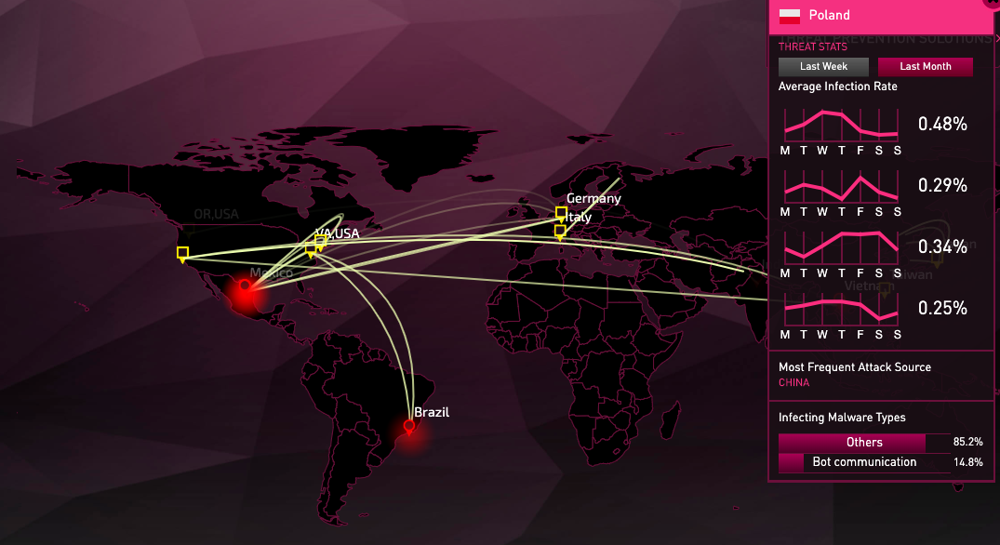
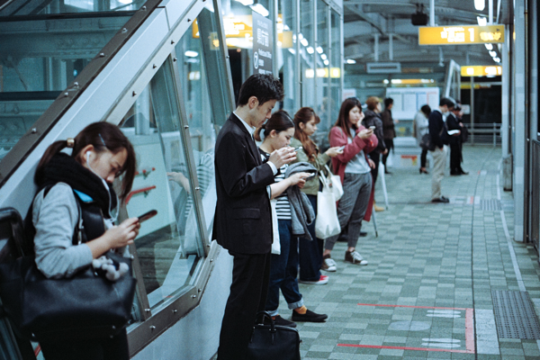

Państwo i jego administracja w epoce cyfrowej nie mogą efektywnie funkcjonować bez dostępu do cyberprzestrzeni. Cyberprzestrzeń jest domeną wszechogarniającą, od jakości (sprawności) której zależy zdolność do funkcjonowania (a nawet przetrwania) państwa i jego organów, w tym sił zbrojnych, społeczeństwa, z wszystkimi grupami społecznymi, etnicznymi, religijnymi, zawodowymi itp.
Ważkość cyberprzestrzeni dla bezpieczeństwa narodowego uwypukla się szczególnie w kontekście walki informacyjnej. Nowoczesne kanały informacyjne (sieci teleinformatyczne – Internet – z ich specyfiką i różnorodnością w zakresie sposobów działania: portale informacyjne ogólne i tematyczne, blogi, sieci społecznościowe itp.) są ekstensywnie wykorzystywane do szerzenia dezinformacji oraz podejmowania działań manipulacyjnych. Ich konsekwencją mogą być decyzje na najwyższym szczeblu państwowym, podejmowane w oparciu o fałszywe przesłanki.
Rzeczywiste działania w tym zakresie mogą obejmować:
- umieszczanie treści, modyfikowanie zawartości stron rządowych, organizacyjnych, korporacyjnych itp., co prowadzi co fałszywego odbioru rzeczywistości,
- umieszczanie na portalach uważanych za wiarygodne informacji, raportów i analiz wypaczających postrzeganie rzeczywistości (zgodnie z oczekiwaniem sprawcy),
- modyfikowanie danych na stronach ośrodków analitycznych (politycznych, ekonomicznych, socjologicznych itp.), co może prowadzić do podejmowania decyzji opartych na fałszywych przesłankach,
- zamieszczanie w Internecie treści podważających fakty w jakiejś sprawie, sugerujących inny przebieg wydarzeń, inne role osób, w tym np. takie, które je skompromitują,
- zamieszczanie w Internecie treści uwypuklających różnice między poszczególnymi grupami etnicznymi lub wyznawcami różnych religii, co prowadzić może do niesnasek, niepokojów, a w dłuższej perspektywie do rozruchów społecznych.
Na mapie obrazującej cyberataki w czasie rzeczywistym pokazano statystyki dotyczące ataków na Polskę w marcu 2019 r. Wynika z nich, że w tym miesiącu najczęstrzym źródłem ataków była ChRL. Warto zobaczyć tę stronę: https://threatmap.checkpoint.com/ThreatPortal/livemap.html
W walce informacyjnej wobec innego państwa najczęściej stosuje się działania mające na celu: (1) osłabianie i pomniejszanie roli ośrodków centralnych i kierownictwa państwa, w tym kompromitowanie liderów, podważanie ich kompetacji, (2) pozbawianie wiodących ośrodków zdolności do podejmowania wiążących decyzji, (3) inspirowanie i powodowanie w państwie błędnej polityki kadrowej na najwyższych szczeblach, błędnych decyzji w podstawowych (kluczowych) sektorach jego aktywności, w tym w zakresie polityki zagranicznej, bezpieczeństwa i obronności, (4) wywoływanie niepewności i lęku, złych nastrojów w społeczeństwie, celem osłabieania woli działania, zwłaszcza walki, wsparcia decyzji władz, mobilizacji w razie wojny, (5) podważanie zdolności kierownictwa obrony i dowództw najwyższych szczebli do podejmowania ważnych / słusznych decyzji dot. szkoleń, reform SZ, zamawianego uzbrojenia, systemów obronnych itp., przez generowanie tarć między kluczowymi decydentami, (6) przechwytywanie i modyfikowanie informacji, kradzież informacji, w tym pozbawianie danych przez blokowanie, rozpowszechnianie fałszywych informacji co do bieżącej sytuacji i kierunków jej rozwoju (międzynarodowej – globalnej, regionalnej i przygranicznej oraz wewnętrznej w każdym pożądanym zakresie), (7) blokowanie procesów kierowania państwem, jego obroną i bezpieczeństwem, zakłócanie funkcjonowania kluczowych sektorów aktywności państwa, szerzenie strachu i paniki.
Walka informacyjna (albo działania informacyjne) to akcje manipulacyjne i destrukcyjne, prowadzone jawnie lub skrycie w czasie pokoju, kryzysu i wojny, skierowane na systemy informacyjne i informacyjno-sterujące państw, z pobudek społecznych, politycznych, ekonomicznych itp.
W sieciach teleinformatycznych, gdzie odbywa się gromadzenie i przechowywanie informacji - prowadzi się analizę informacji i ich publikowanie, służby państwowe i firmy śledzą wydarzenia na świecie, w regionie i w kraju, firmy wdrażające elementy przemysłu 4.0 przesyłają wrażliwe dane i sygnały sterowania procesami produkcyjmyni, a zwykli ludzie prowadzą aktywność zawodową i prywatną.
Dlatego zdolność do efektywnego chronienia sieci teleinformatycznych jest najważniejszym elementem: (1) przeciwdziałania, ochrony i obrony przed wywieraniem wpływu na państwo i społeczeństwo, (2) utrzymania produkcji przemysłowej na poziomie umożliwiającym normalne funckjonowania państwa, (3) utrzymania zdolności państwa do przeciwdziałania pośredniej i bezpośredniej agresji oraz do obrony militarnej, (4) utrzymania zdolności do reagowania kryzysowego oraz utrzymania ładu i porządku społecznego.
Pozbawienie społeczeństwa dostępu do Internetu miałoby katastrofalne skutki zarówno dla obywateli indywidualnie, jak i administracji publicznej
Zdarzeniami, zjawiskami i procesami generującymi zagrożenia są m.in.:
- uzależnienie administracji państwowej i samorządowej od sprzętu (szerzej: infrastruktury technicznej) dostarczanej od jednego dostawcy / wytwórcy; monopolistyczna pozycja wobec państwa tworzy groźne uzależnienia, uniemożliwiające późniejsze wdrożenie innych rozwiązań technicznych,
- uzależnienie administracji państwowej i samorządowej od oprogramowania wytwarzanego przez jedną korporację,
- niski poziom świadomości wśród pracowników - użytkowników sieci, urządzeń technicznych służących pozyskiwaniu informacji, przetwarzania i analizowania ich oraz przesyłania (niewystarczająca liczba szkoleń, częste absencje na szkoleniach, lekceważący stosunek przełożonych, w tym obchodzenie przyjętych regulacji w celu poprawy efektywności pracy),
- niski poziom serwisowy / techniczny urządzeń służących przetwarzania cyfrowemu (sprzęt nie akceptujący najnowszego oprogramowania, oszczędzanie na aktualizacji oprogramowania każdego rodzaju),
- niski poziom wykształcenia / wyszkolenia / zaangażowania wśród pracowników technicznych odpowiedzialnych za kwalifikowanie sprzętu służącego wspieraniu aktywności państwa, jego serwisowanie, modernizację itp.
Wśród działań zapobiegawczych i ochronnych muszą znaleźć się przede wszystkim działania edukacyjne. Nie oznacza to oczywiście, że każdy powinien być specjalistą w zakresie cyberbezpieczeństwa. Niewielu jest specjalistami w zakresie ratownictwa medycznego, a jednak coraz więcej osób ma wiedzę i umiejętności wystarczające do skutecznego zareagowania w miejscu wypadku. Podobnie jest z cyberbezpieczeństwem. Docelowo każdy kto posługuje się technologiami cyfrowymi, powinien mieć wiedzę i umiejętności oraz świadomość ważności tej aktywności, by przynajmniej zabezpieczać swoje dane, kanały ich transmisji oraz zareagować na incydent, a przynajmniej go zgłosić.
Społeczeństwa państw Europy, w tym Polska, nie są jeszcze w pełni informacyjne, ale z pewnością są już uzależnione od informacji. Pogrążone w śledzeniu mediów społecznościowych, zdobywaniu lajków i nowych przyjaciół, nie są w stanie nadążyć za nowościami technologicznymi i nawet się nie starają.